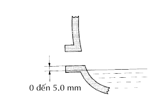

DẦU HỘP SỐ THƯỜNG > KIỂM TRA TRÊN XE |
| 1. KIỂM TRA DẦU HỘP SỐ |
|  |
Đỗ xe trên bề mặt bằng phẳng.
Tháo nút đổ dầu và gioăng.
Kiểm tra rằng mức dầu cách mép dưới của miệng nút đổ dầu từ 0 đến 5 mm (0 đến 0.20 in.).
Nếu kết quả không như tiêu chuẩn, hãy đổ thêm dầu hộp số.
Kiểm tra rò rỉ dầu khi mức dầu là thấp. Nếu bị rò rỉ, hãy sửa vùng đó để bịt rò rỉ. Hãy thay thế các chi tiết hư hỏng khi cần thiết.
Lắp một gioăng mới và nút đổ dầu.